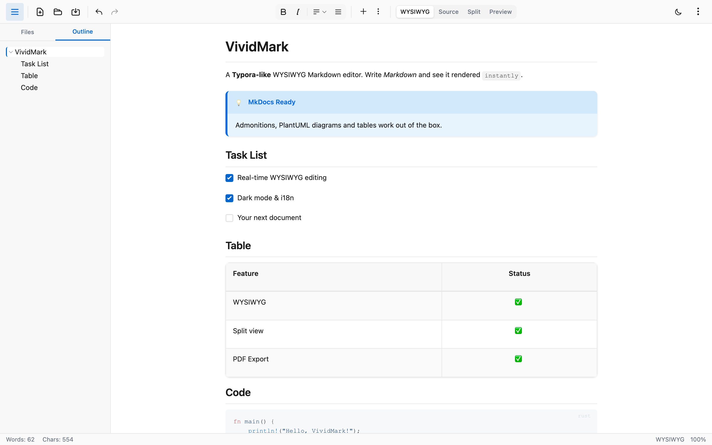
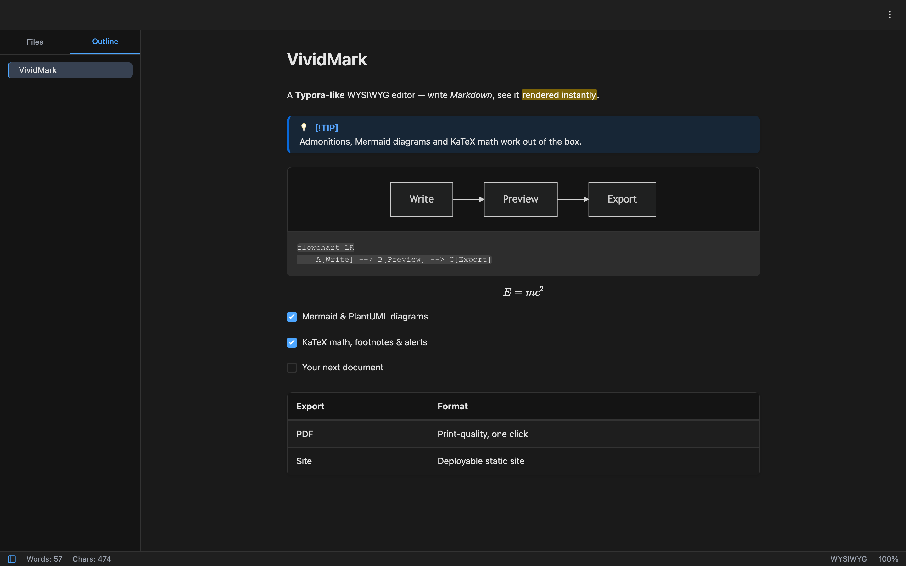
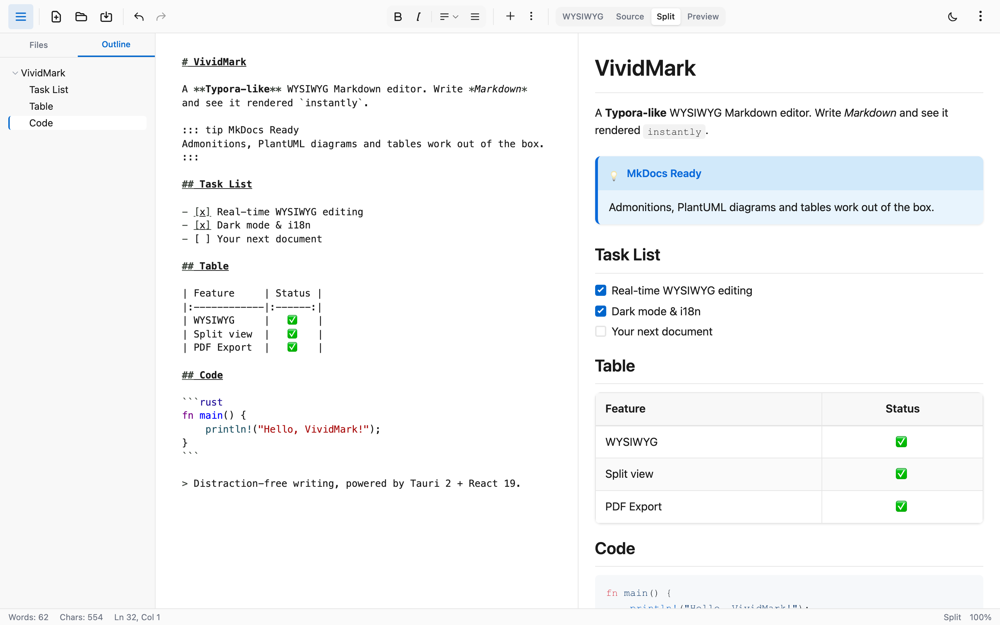
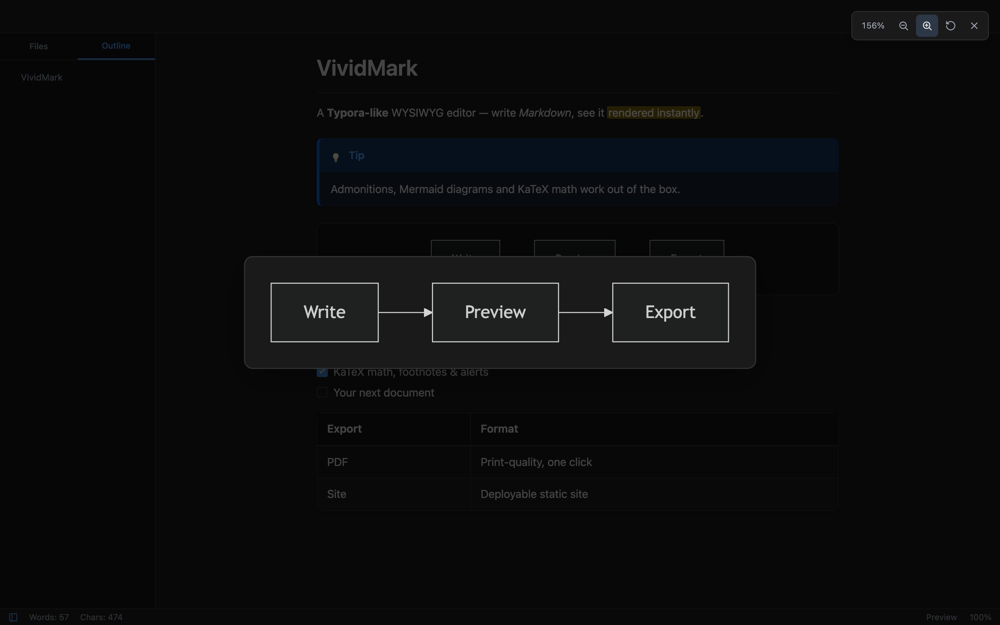

轻量级、无干扰的写作体验，支持实时预览。 完全由 AI 构建。
📝 完美适配 MkDocs 支持提示框、Mermaid 与 PlantUML 图表、KaTeX 数学公式和高级表格，编辑 MkDocs 文档的理想工具




本项目完全由 AI 编程助手构建。 每一行代码都是通过 AI 协作生成、审查和优化的。
GLM 模型
Kimi 模型
把打开的文档目录一键导出为可直接部署的静态网站：mkdocs 风格导航、自动重写跨页链接、内置浅/深色切换，零外部依赖。配置感知：mkdocs.yml 的 nav / docs_dir / exclude_docs 驱动导出，VuePress 尽力支持。
所见即所得、源码、预览和分屏视图，分屏模式支持同步滚动。
输入时即时查看格式化的 Markdown 内容。
基于 highlight.js 的精美代码高亮。
流程图、时序图、甘特图与 UML 由内置引擎离线渲染——按需懒加载、暗色自适应，PDF/站点导出内联 SVG。点击图表或图片即可打开全屏查看器放大查看。
使用原生系统对话框打开、保存和管理 Markdown 文件。
无操作 2 秒后自动保存。
完整的快捷键历史记录支持。
表格、提示框（含 GitHub 警示框）、脚注、KaTeX 数学公式、==高亮==、^上标^、~下标~、emoji 短码与 YAML frontmatter——WYSIWYG 中往返无损。
亮色、暗色或跟随系统主题，舒适的写作体验。
文件树支持搜索过滤与新建/重命名/删除，大纲可折叠并高亮跟随当前位置。
Typora 式 SDI：每文档独立窗口，打开已打开的文件时智能聚焦其窗口。